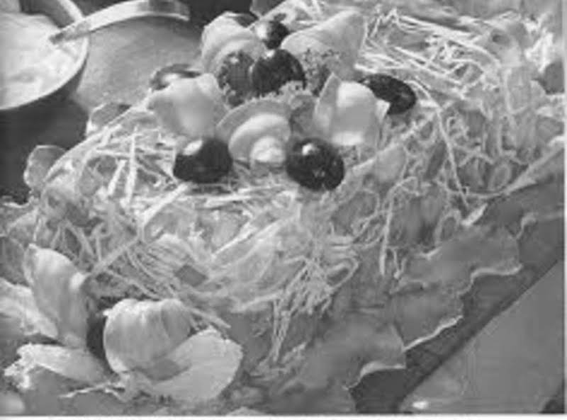

Perfection Salad

It isn't an understatement to say that vegetables are important. They are a vital way to secure the nutrients we need, come in a variety of fun colors, and
each one has it's own seasonal marketing schedule. However, it is an 'uhh' statement to tell someone that you've developed an interest in
researching the rightfully-lost art of suspending your earthly spoils in gelatin, which is the basic blueprint for a Perfection Salad.
Ingredients
- 1 cup boiling water
- 3oz package of lemon Jell-O gelatin
- 2 tablespoons vinegar or 2 tablespoons lemon juice
- 1 teaspoon salt
- 1 teaspoon salt
- 1 cup cold water
- 1 cup finely diced celery
- 1 cup finely shredded cabbage
- 1 tablespooon dried onion flakes
- 1 tablespoons chopped pimento
- mayonnaise, quantity unspecified
Directions
- Pour boiling water over jello in bowl.
- Stir until jello is disolved.
- Stir in vinear, veggies, salt and cold water.
- Pour into mold, chill until firm.
- Serve unmolded on chilled plate, topped with a generous dollop of mayonnaise.
Home Page